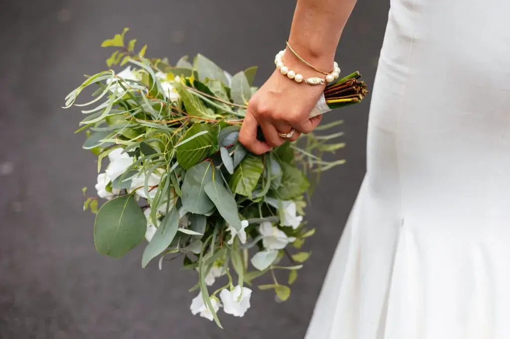
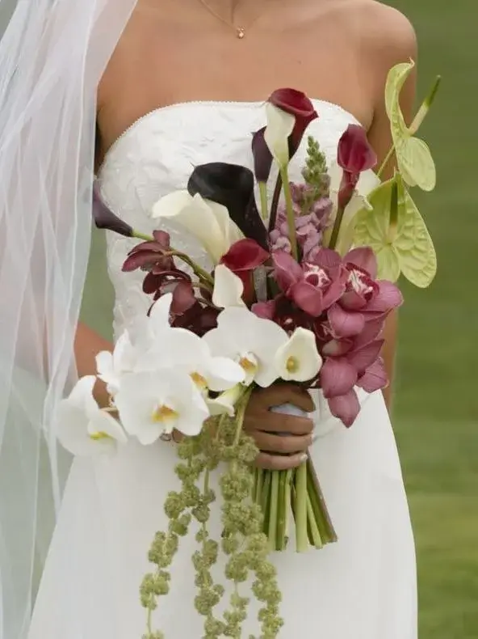
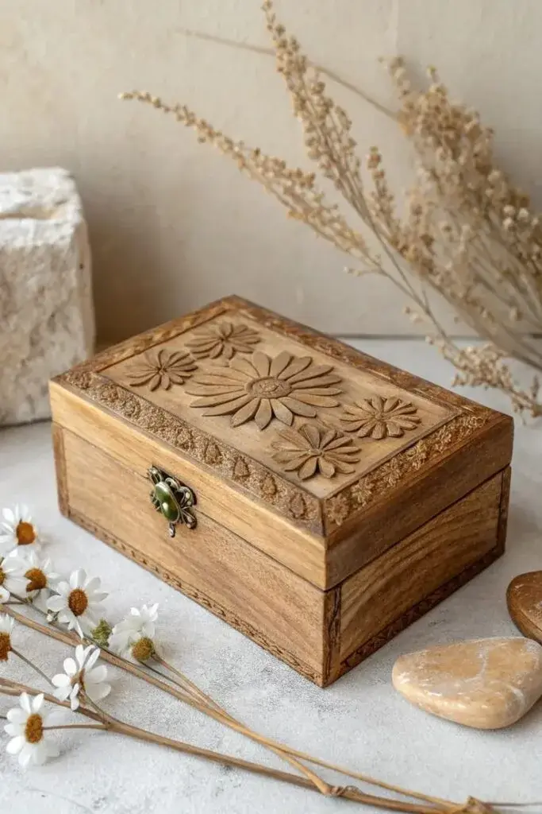
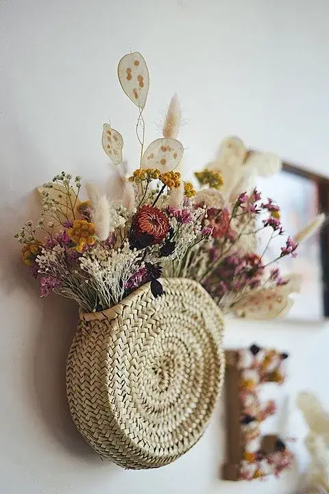
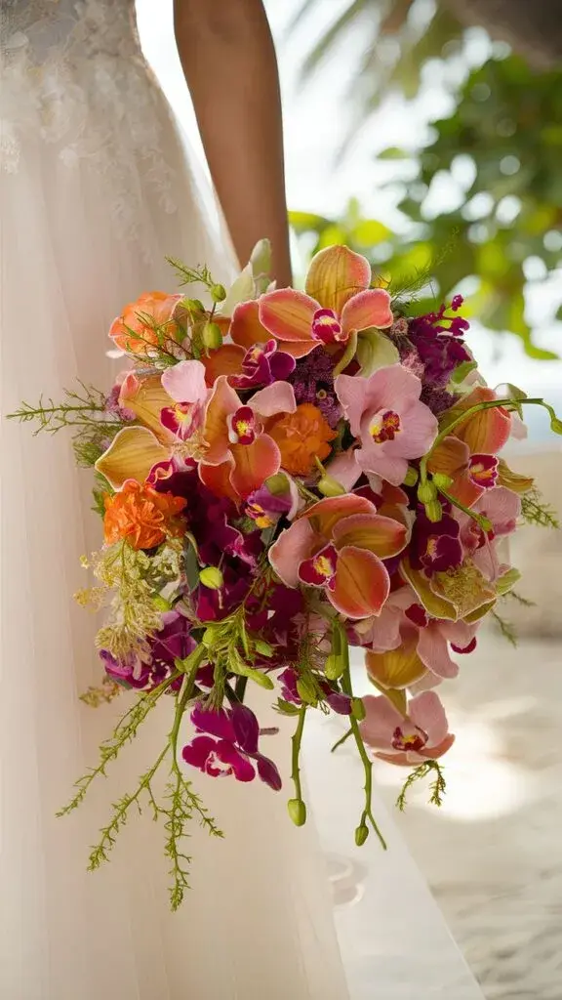

Why preserve your wedding bouquet?
Your wedding day is a unique day, an enchanted interlude you have imagined, prepared and dreamed of for months, sometimes even years. Every detail has been carefully chosen to tell your story: the venue, the decor, the outfits, the rings, the flowers… Among all these elements, the wedding bouquet holds a very special place.
Far more than a simple accessory, it accompanies the bride throughout this exceptional day. It is there during the preparations, at the ceremony, in the most precious photographs and in the most intimate moments. It becomes the symbol of your personality, your style and the emotion you feel as you prepare to say “I do”.
Yet, like all fresh flowers, its beauty is naturally fleeting. A few days after the wedding, the petals begin to wilt, the colours lose their brightness and the bouquet gradually fades away.
This is often the moment when many brides feel a touch of nostalgia. After putting so much care into creating their wedding bouquet, they realise they will have to part with it.
Fortunately, there is now a solution that is as elegant as it is moving: the everlasting bouquet.
This alternative lets you keep your wedding flowers for many years, turning a fleeting memory into a true sentimental heirloom.
The everlasting bouquet: a keepsake that stands the test of time
Contrary to what you might think, an everlasting bouquet is not made of artificial flowers.
It is made of real, natural flowers that have undergone a specific preservation process to preserve their appearance, texture and colours for a very long time.
The everlasting bouquet answers a wish more and more couples share: to extend the emotions of the big day and keep a tangible link with one of the most beautiful moments of their life.
In a world where memories are often stored on phones or hard drives, keeping your wedding bouquet offers a different experience. It is no longer just about looking at a photo, but about holding a real object, full of emotions and memories.
Every flower tells a story.
It recalls the moment you walked down the aisle, the looks exchanged during the ceremony, the laughter with your loved ones and the suspended moments that make a wedding unforgettable.

What is the difference between dried, preserved and artificial flowers?
When talking about everlasting bouquets, three terms come up again and again: dried flowers, preserved flowers and artificial flowers.
Yet these three techniques are very different.

Dried flowers: authentic, natural charm
Drying is the oldest preservation method.
It involves letting the flowers lose their water naturally so they can be kept longer.
Dried flowers appeal with their authentic, poetic and slightly vintage look. They fit perfectly into bohemian, country or romantic styles.
However, drying usually brings a few changes:
- Colours become softer or darker;
- Petals become more fragile;
- The original shape may change slightly;
- Some flowers handle the process better than others.
A dried wedding bouquet thus keeps all its emotional meaning, but with an appearance transformed by time.
Preserved flowers: the finest everlasting bouquet
Preservation (or stabilisation) is today the most sophisticated technique for creating a true everlasting bouquet.
The process replaces the flower's natural sap with a biodegradable plant-based solution.
Thanks to this method, the flowers keep:
- Their natural suppleness;
- Their original appearance;
- Their colour;
- Their texture.
The result is particularly impressive.
The flowers look freshly picked, yet they can be kept for several years without any special care.
It is the preferred solution for couples who want to keep their original wedding bouquet as faithfully as possible.

Artificial flowers: a decorative alternative
Artificial flowers are made from synthetic materials such as fabric, silk, latex or plastic.
They have certain advantages:
- A very long lifespan;
- No maintenance;
- A wide variety of designs.
However, they don't carry the same emotional value as an everlasting bouquet made of the real flowers that accompanied your wedding.
The difference matters: keeping your wedding bouquet means preserving an authentic part of your story. Artificial flowers, however realistic, don't carry that memory.
That is why preserved flowers are now considered the benchmark for creating a true everlasting bouquet.
Why are more and more brides choosing an everlasting bouquet?
Wedding trends are constantly changing, but some values remain timeless: emotion, authenticity and memory.
Today, couples are looking for more meaning in their choices. They want to preserve important moments and create objects that tell their story.
The everlasting bouquet answers this wish perfectly.
It extends the magic of the wedding while giving a second life to a carefully designed floral creation.
Social media has also done a lot to popularise this trend. Many brides now share the creations made from their wedding bouquet: floral frames, personalised displays, glass domes or decorative wreaths.
Every creation becomes unique.
No two everlasting bouquets are alike, because every love story is different.
Among the most elegant options, the floral frame remains one of newlyweds' favourites.
The flowers from the bouquet are carefully preserved, then arranged in a deep frame specially designed to protect them.
This presentation turns your wedding bouquet into a true work of art.
Hung in a bedroom, a living room or a hallway, it adds a personal touch to your interior.
Every glance at the frame rekindles the emotions of the big day and recalls the promises you exchanged.
The frame can be fully personalised to match your interior style:
- Natural wood;
- Dark wood;
- Black metal;
- Elegant gilding;
- A minimalist contemporary frame.
Some creations also include the wedding date, the couple's names or a meaningful quote.
The floral frame: when the bouquet becomes a work of art

The glass sphere: capturing the magic of your wedding
For those who love refined objects, the glass sphere offers a particularly poetic way to showcase the everlasting bouquet.
Protected under a dome or inside a clear sphere, the flowers seem suspended in time.
The glass offers effective protection against:
- Dust;
- Humidity;
- Repeated handling.
This presentation also brings great visual lightness and lets you admire the flowers from every angle.
Placed on a mantelpiece, a console table or a bookshelf, it becomes a true high-end decorative piece.

The keepsake box: passing on a family story
Some memories deserve to be kept in privacy.
The keepsake box fits this philosophy perfectly.
Made of wood, velvet or other fine materials, it holds the everlasting bouquet in a protective case.
More than a simple decorative object, it becomes a true emotional heirloom.
Imagine opening this box with your children in a few years' time and telling them the story of your wedding.
The flowers then become the silent witnesses of a founding moment in your family's history.
This intergenerational dimension appeals to many couples who want to pass on their most precious memories.
The design stand: a contemporary floral sculpture
Lovers of modern decor particularly appreciate the design stand.
This presentation keeps the overall shape of the bouquet while showcasing it on a specially designed base.
Solid wood, metal, marble or clear acrylic: the possibilities are endless.
The everlasting bouquet then becomes a true floral sculpture that naturally draws the eye.
Easy to move, it can follow the changes in your interior while keeping its strong sentimental value.

How to keep your wedding bouquet in the best conditions
Even though preserved flowers are designed to last, a few precautions help maximise their longevity.
To look after your everlasting bouquet:
- Avoid direct sunlight;
- Keep it away from humidity;
- Avoid strong sources of heat;
- Dust it gently if needed;
- Limit repeated handling.
With these simple steps, your wedding bouquet will keep its beauty for many years to come.

An aesthetic, emotional and responsible choice
Choosing an everlasting bouquet is also a more sustainable approach.
Instead of letting the flowers disappear a few days after the wedding, you give them a second life.
This approach fits perfectly with the new trend for responsible weddings, where every element is designed to have a lasting impact.
The bouquet is no longer a simple disposable decoration.
It becomes an object of memory.
A precious keepsake that accompanies your life as a couple every day.

In short
At Lovely Day Event, we know that the most beautiful stories aren't limited to a single day.
A wedding is an exceptional moment, but the emotions it stirs deserve to be preserved long after the big day.
The everlasting bouquet perfectly embodies this philosophy.
It keeps a tangible trace of your love, your commitment and the memories shared with those dear to you.
Whether it becomes a floral frame, sits under a glass sphere, rests in a keepsake box, is reimagined as a wall wreath or is displayed as a contemporary sculpture, your wedding bouquet continues to tell your story year after year.
Because a wedding is much more than an event, it deserves to leave a lasting mark on your everyday life.
And because every Lovely Day deserves to live forever, the everlasting bouquet is surely one of the most beautiful ways to extend the magic.